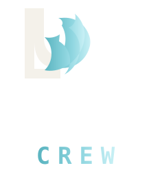
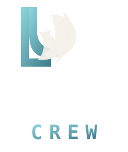
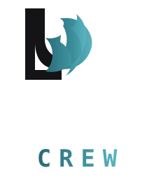
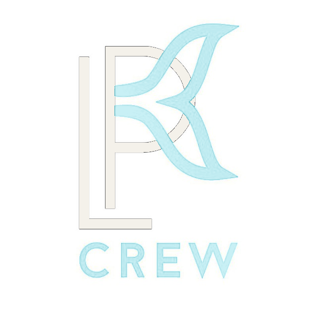
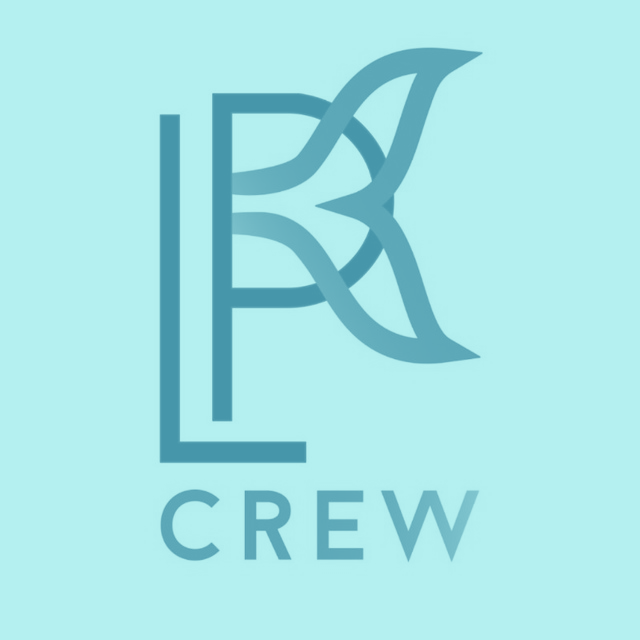
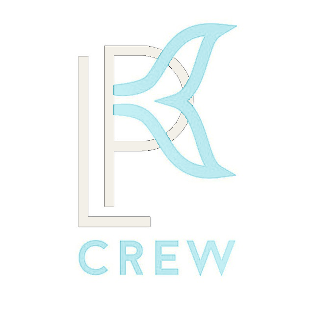
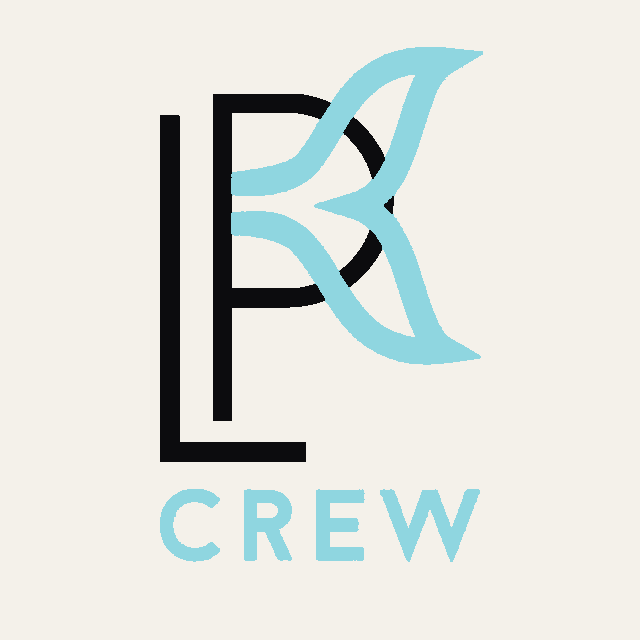

01 · Полный (вектор)

Шапка погружения, печать, соцсети. logo-tidal-full.svg
Несколько адаптаций исходного знака под палитру 14-tidal: тёмный фон, кремовый текст #f4f1ea, ледяной акцент #8fd6e0. Векторные версии — для шапки и масштабирования; растровые — перекрашенный оригинал с сохранением формы хвоста кита.

Шапка погружения, печать, соцсети. logo-tidal-full.svg
Фавикон, аватар, водяной знак. logo-tidal-mark.svg
Навигация, подпись в документах. logo-tidal-horizontal.svg
Компактный горизонтальный знак для навигации. logo-tidal-header.svg

Вертикальный одноцветный вариант. logo-tidal-mono.svg

Монограмма в градиенте tidal. logo-tidal-accent.svg

Документы, мерч на светлой бумаге. logo-tidal-light-bg.svg

Оригинал с заменой чёрного на крем и синего на cyan. logo-tidal-photo-cream.png

Монохром в оттенках акцента. logo-tidal-photo-cyan.png

Крем + cyan с усиленным контрастом. logo-tidal-photo-glow.png

Тёмный знак для светлого фона. logo-tidal-photo-print.png